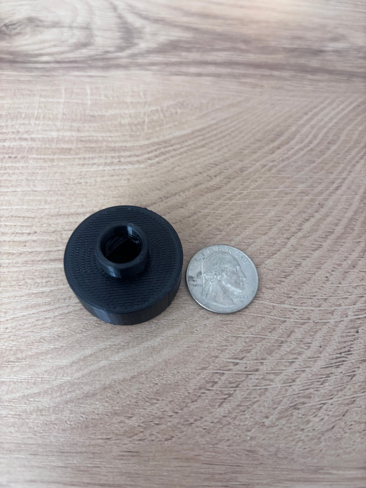
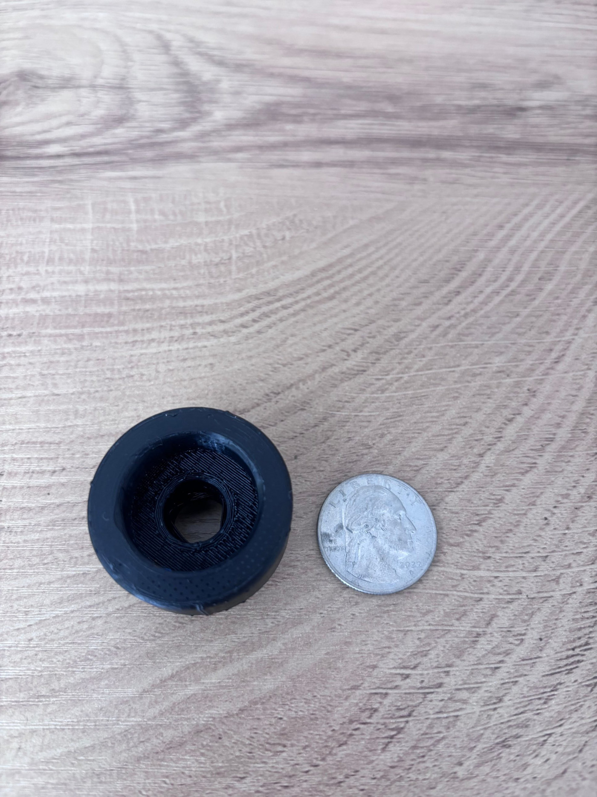
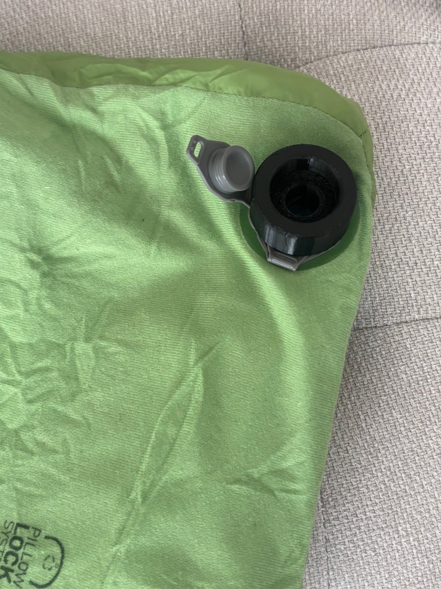
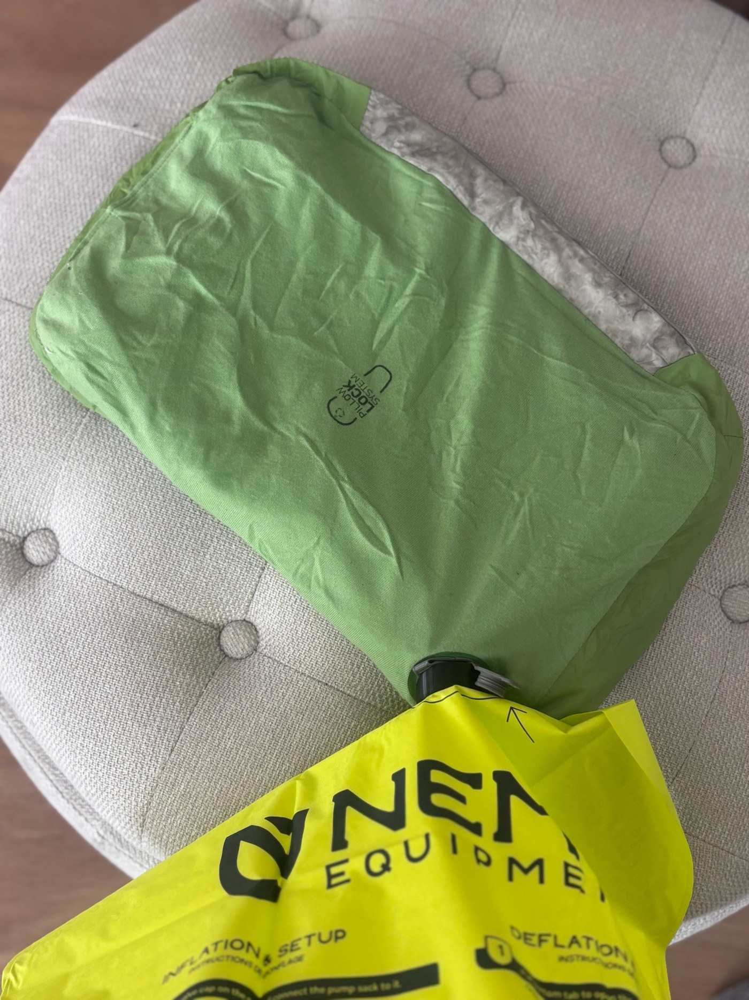

CADD Projects
// designer //
Designed and 3D-printed a custom gear adaptor in Onshape, an original model, achieving a precise cross-compatible fit between two consumer outdoor products.
the problem
I have a Sea to Summit inflatable camping pillow, but a Nemo inflatable sleeping pad. The inflate system for the Nemo sleeping pad only works with Nemo products.
the process
I decided to design an adaptor for my Nemo inflate bag that would let me attach the inflate valve of the pillow.
I measured the inside of the valve on my pillow and the inflate valve on the Nemo bag, then designed a lightweight adaptor that could easily fit in my inflatable pillow bag.
I printed the model with a 3D printer. The first print was a success: it fit easily in the pillow valve and attached to the Nemo inflate bag.


the outcome
I was able to easily inflate my pillow with the Nemo inflate bag, saving me another trip to the store for a new camp pillow.


Saved money: this saved me $50–100 on a new inflatable pillow.
Less waste: I avoided buying a new pillow and its packaging, and kept a working pillow in use.
A simpler kit: one inflate bag now serves both my sleeping pad and my pillow, and the lightweight adaptor packs inside the pillow bag.